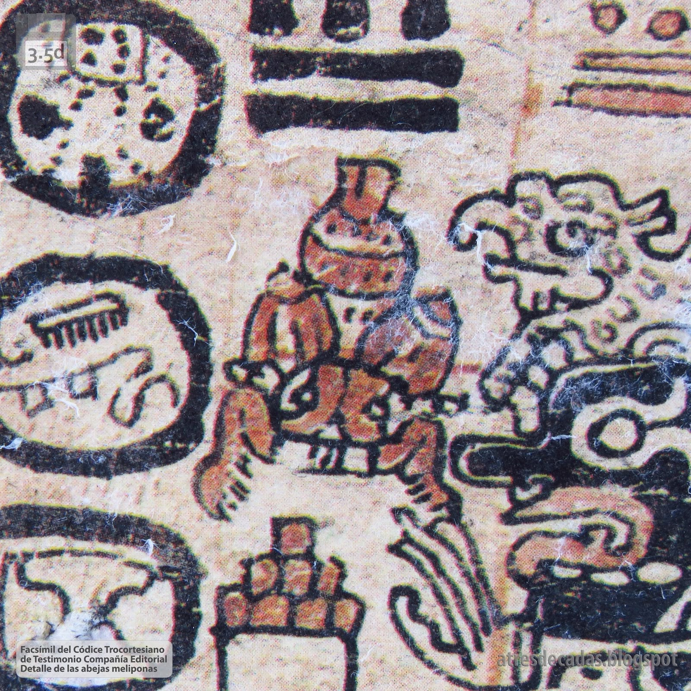
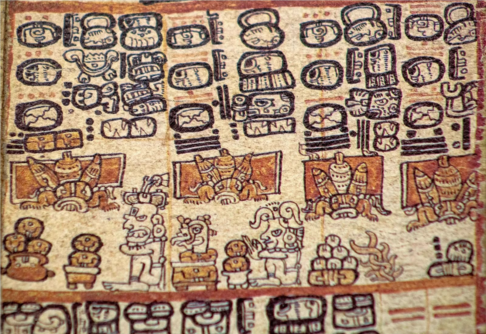
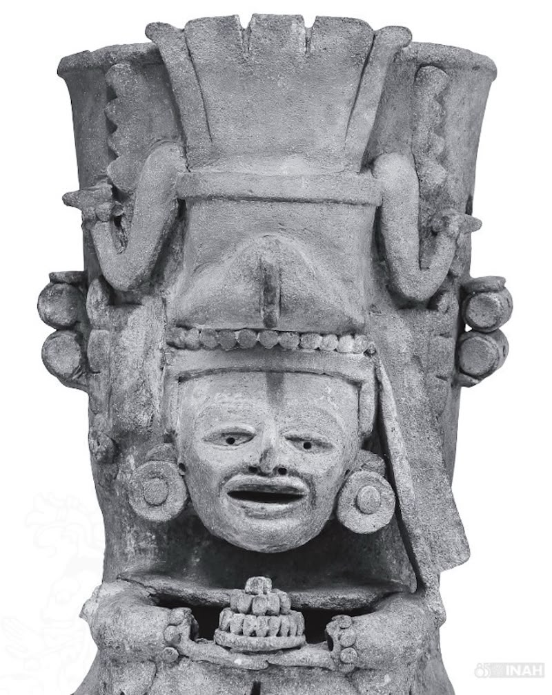
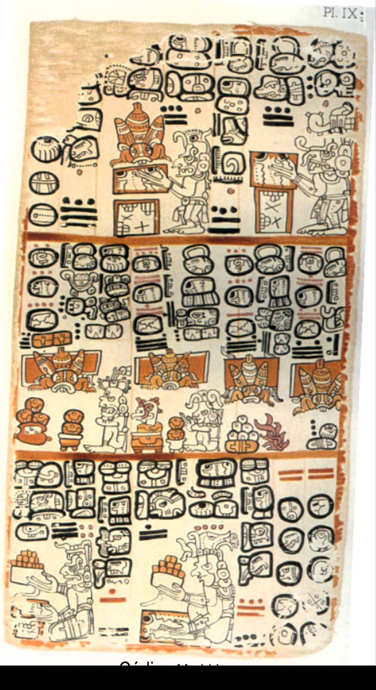

Mucho antes de la Central Apícola del Usumacinta, los pueblos mayas de esta misma tierra ya criaban abejas sagradas y registraban ese saber en sus códices.
Mucho antes de que la abeja europea (Apis mellifera) llegara a México con la Colonia, los pueblos mayas de las tierras bajas —las mismas selvas que hoy recorre el Usumacinta— ya practicaban la meliponicultura: la crianza de abejas nativas sin aguijón. Esa relación con las abejas no era solo alimento, era parte de su religión, su calendario ritual y su forma de entender el mundo. Lo sabemos porque ellos mismos lo dejaron escrito.

Los mayas no criaban cualquier abeja: criaban a la Melipona beecheii, conocida en maya yucateco como Xunán Kab ("la señora abeja"). A diferencia de la abeja europea, no tiene aguijón y produce una miel más líquida y aromática, usada tanto en la alimentación como en ceremonias y medicina tradicional.
Esa misma abeja —la Melipona— es la que hoy protegemos en nuestro meliponario y en el Centro de Rescate.

El Códice Trocortesiano —también llamado Códice de Madrid— es uno de los pocos libros mayas prehispánicos que sobrevivieron a la Conquista. En sus últimas páginas guarda un "almanaque de las abejas": una serie de láminas donde los sacerdotes-astrónomos mayas registraban los días propicios para cuidar las colmenas, cosechar la miel y ofrendarla a los dioses.
Que un pueblo dedicara páginas enteras de su libro más importante a las abejas dice mucho de lo sagrado que era este oficio.

Además de los códices, el INAH resguarda piezas cerámicas y de piedra como ésta, que muestran la riqueza simbólica del mundo maya alrededor de sus dioses y rituales. Piezas así —tocados, incensarios, urnas— son las que permiten a los arqueólogos reconstruir, poco a poco, el papel que tuvieron las abejas y su miel en la vida ceremonial de estos pueblos.
Los pueblos mayas de las tierras bajas crían Melipona beecheii en troncos huecos (jobones), registrando el oficio en sus códices.
Con la Colonia llega la Apis mellifera, la abeja con aguijón que hoy es la más común en la apicultura comercial de México.
En esta misma región, apicultoras trabajan hoy tanto con abeja Apis como con Melipona, cuidando además a las abejas nativas en nuestro Centro de Rescate.
"Cuando cuidamos a la Xunán Kab, no hacemos nada nuevo: seguimos un oficio que esta tierra lleva practicando desde hace más de mil años."
Central Apícola del UsumacintaFacsímil Códice Trocortesiano
Pieza arqueológica · INAH
Detalle abejas meliponas · Testimonio Cía. Editorial

Lámina IX, Códice Trocortesiano
Las imágenes de códice son facsímiles de la edición de Testimonio Compañía Editorial; la pieza arqueológica pertenece al acervo documentado por el INAH. Se muestran aquí con fines educativos, como contexto histórico de la meliponicultura maya.
En nuestro Centro de Rescate seguimos protegiendo a la Melipona y a otras abejas nativas de la región, la misma que aparece en las páginas del Códice Trocortesiano.